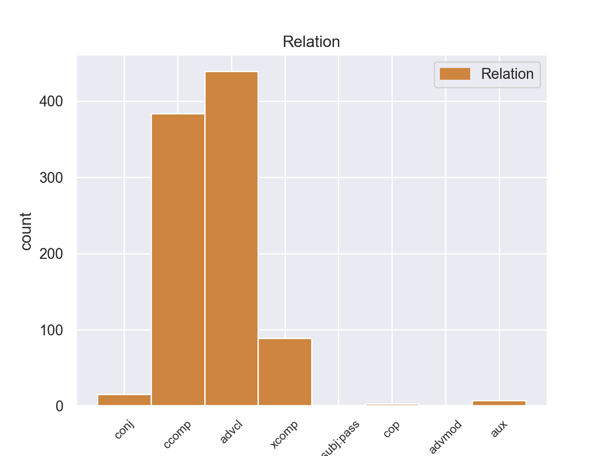
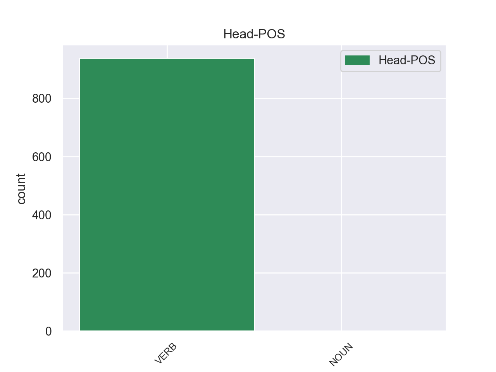
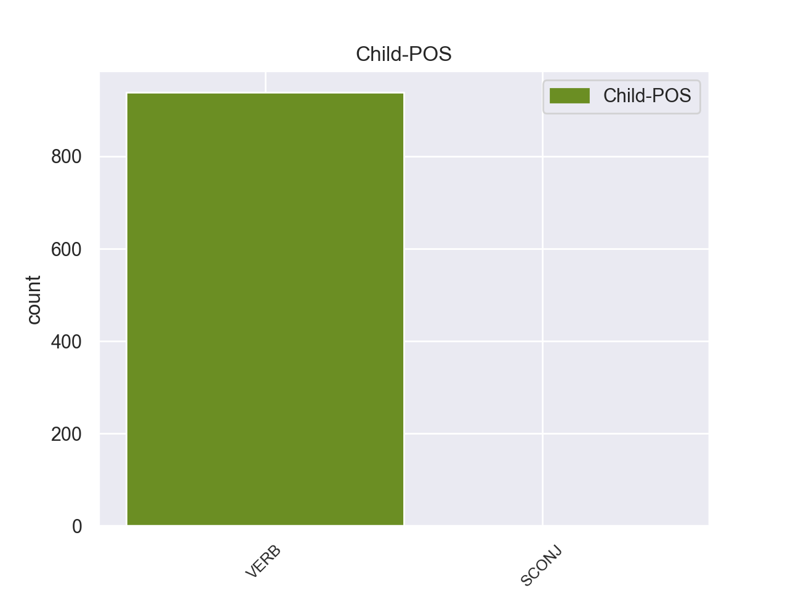

Distribution of features within this leaf



Agreement Rules sorted by frequency.
- When the dependent token is the adverbial clause modifier(advcl) of the head token, and the dependent token is VERB.
1 πρόκειται _ _ _ _ 0 _ _ _
2 για _ _ _ _ 0 _ _ _
3 αυτό _ _ _ _ 0 _ _ _
4 το _ _ _ _ 0 _ _ _
5 οποίο _ _ _ _ 0 _ _ _
6 αποκαλύφθηκε αποκαλύφθηκε VERB _ Aspect=Perf|Mood=Ind|Number=Sing|Person=3|Tense=Past|VerbForm=Fin|Voice=Pass 0 _ _ _
7 κατά _ _ _ _ 0 _ _ _
8 τη _ _ _ _ 0 _ _ _
9 διάρκεια _ _ _ _ 0 _ _ _
10 αυτής _ _ _ _ 0 _ _ _
11 της _ _ _ _ 0 _ _ _
12 διαδικασίας _ _ _ _ 0 _ _ _
13 , _ _ _ _ 0 _ _ _
14 ότι _ _ _ _ 0 _ _ _
15 ο _ _ _ _ 0 _ _ _
16 Εισαγγελέας _ _ _ _ 0 _ _ _
17 κάποια _ _ _ _ 0 _ _ _
18 στιγμή _ _ _ _ 0 _ _ _
19 ζήτησε ζήτησε VERB _ Aspect=Perf|Mood=Ind|Number=Sing|Person=3|Tense=Past|VerbForm=Fin|Voice=Act 6 advcl _ _
20 από _ _ _ _ 0 _ _ _
21 την _ _ _ _ 0 _ _ _
22 Πρόεδρο _ _ _ _ 0 _ _ _
23 του _ _ _ _ 0 _ _ _
24 Σώματος _ _ _ _ 0 _ _ _
25 , _ _ _ _ 0 _ _ _
26 την _ _ _ _ 0 _ _ _
27 προκάτοχό _ _ _ _ 0 _ _ _
28 σας _ _ _ _ 0 _ _ _
29 , _ _ _ _ 0 _ _ _
30 λεπτομέρειες _ _ _ _ 0 _ _ _
31 για _ _ _ _ 0 _ _ _
32 την _ _ _ _ 0 _ _ _
33 ψήφο _ _ _ _ 0 _ _ _
34 που _ _ _ _ 0 _ _ _
35 έχουν _ _ _ _ 0 _ _ _
36 δώσει _ _ _ _ 0 _ _ _
37 οι _ _ _ _ 0 _ _ _
38 δύο _ _ _ _ 0 _ _ _
39 συγκεκριμένοι _ _ _ _ 0 _ _ _
40 βουλευτές _ _ _ _ 0 _ _ _
41 προκειμένου _ _ _ _ 0 _ _ _
42 να _ _ _ _ 0 _ _ _
43 διευκρινιστεί _ _ _ _ 0 _ _ _
44 περαιτέρω _ _ _ _ 0 _ _ _
45 η _ _ _ _ 0 _ _ _
46 πιθανότητα _ _ _ _ 0 _ _ _
47 να _ _ _ _ 0 _ _ _
48 είχαν _ _ _ _ 0 _ _ _
49 ασκήσει _ _ _ _ 0 _ _ _
50 αθέμιτη _ _ _ _ 0 _ _ _
51 επιρροή _ _ _ _ 0 _ _ _
52 . _ _ _ _ 0 _ _ _
1 Ευελπιστώ ευελπιστώ VERB _ Aspect=Imp|Mood=Ind|Number=Sing|Person=1|Tense=Pres|VerbForm=Fin|Voice=Act 0 _ _ _
2 ότι _ _ _ _ 0 _ _ _
3 η _ _ _ _ 0 _ _ _
4 απόφαση _ _ _ _ 0 _ _ _
5 αυτή _ _ _ _ 0 _ _ _
6 , _ _ _ _ 0 _ _ _
7 συμπεριλαμβανομένης _ _ _ _ 0 _ _ _
8 και _ _ _ _ 0 _ _ _
9 της _ _ _ _ 0 _ _ _
10 αιτιολογικής _ _ _ _ 0 _ _ _
11 έκθεσης _ _ _ _ 0 _ _ _
12 που _ _ _ _ 0 _ _ _
13 την _ _ _ _ 0 _ _ _
14 συνοδεύει _ _ _ _ 0 _ _ _
15 , _ _ _ _ 0 _ _ _
16 θα _ _ _ _ 0 _ _ _
17 διαβιβαστεί διαβιβαστεί VERB _ Aspect=Imp|Mood=Ind|Number=Sing|Person=3|Tense=Pres|VerbForm=Fin|Voice=Act 1 ccomp _ _
18 σ _ _ _ _ 0 _ _ _
19 τις _ _ _ _ 0 _ _ _
20 γαλλικές _ _ _ _ 0 _ _ _
21 αρχές _ _ _ _ 0 _ _ _
22 , _ _ _ _ 0 _ _ _
23 εφόσον _ _ _ _ 0 _ _ _
24 υπερψηφιστεί _ _ _ _ 0 _ _ _
25 από _ _ _ _ 0 _ _ _
26 το _ _ _ _ 0 _ _ _
27 Κοινοβούλιο _ _ _ _ 0 _ _ _
28 . _ _ _ _ 0 _ _ _
1 Παρόμοιο _ _ _ _ 0 _ _ _
2 καθεστώς _ _ _ _ 0 _ _ _
3 επιδιώκουν επιδιώκουν VERB _ Aspect=Imp|Mood=Ind|Number=Sing|Person=3|Tense=Pres|VerbForm=Fin|Voice=Act 0 _ _ _
4 και _ _ _ _ 0 _ _ _
5 οι _ _ _ _ 0 _ _ _
6 πόλεις _ _ _ _ 0 _ _ _
7 σ _ _ _ _ 0 _ _ _
8 τα _ _ _ _ 0 _ _ _
9 ανατολικά _ _ _ _ 0 _ _ _
10 της _ _ _ _ 0 _ _ _
11 Λιβύης _ _ _ _ 0 _ _ _
12 , _ _ _ _ 0 _ _ _
13 οι _ _ _ _ 0 _ _ _
14 οποίες _ _ _ _ 0 _ _ _
15 είναι _ _ _ _ 0 _ _ _
16 πλούσιες πλούσιες VERB _ Aspect=Imp|Mood=Ind|Number=Plur|Person=3|Tense=Pres|VerbForm=Fin|Voice=Act 3 xcomp _ _
17 σε _ _ _ _ 0 _ _ _
18 κοιτάσματα _ _ _ _ 0 _ _ _
19 πετρελαίου _ _ _ _ 0 _ _ _
20 . _ _ _ _ 0 _ _ _
1 Σχηματίστηκε σχηματίστηκε VERB _ Aspect=Perf|Mood=Ind|Number=Sing|Person=3|Tense=Past|VerbForm=Fin|Voice=Act 0 _ _ _
2 υπηρεσιακή _ _ _ _ 0 _ _ _
3 κυβέρνηση _ _ _ _ 0 _ _ _
4 υπό _ _ _ _ 0 _ _ _
5 τον _ _ _ _ 0 _ _ _
6 Νικόλαο _ _ _ _ 0 _ _ _
7 Καλογερόπουλο _ _ _ _ 0 _ _ _
8 και _ _ _ _ 0 _ _ _
9 η _ _ _ _ 0 _ _ _
10 Βουλή _ _ _ _ 0 _ _ _
11 διέκοψε διέκοψε VERB _ Aspect=Perf|Mood=Ind|Number=Sing|Person=3|Tense=Past|VerbForm=Fin|Voice=Act 1 conj _ _
12 τις _ _ _ _ 0 _ _ _
13 εργασίες _ _ _ _ 0 _ _ _
14 της _ _ _ _ 0 _ _ _
15 . _ _ _ _ 0 _ _ _
1 Σύμφωνα _ _ _ _ 0 _ _ _
2 με _ _ _ _ 0 _ _ _
3 δημοσιεύματα _ _ _ _ 0 _ _ _
4 από _ _ _ _ 0 _ _ _
5 διάφορες _ _ _ _ 0 _ _ _
6 περιοχές _ _ _ _ 0 _ _ _
7 της _ _ _ _ 0 _ _ _
8 Ελλάδας _ _ _ _ 0 _ _ _
9 , _ _ _ _ 0 _ _ _
10 υπολογίζεται _ _ _ _ 0 _ _ _
11 ότι _ _ _ _ 0 _ _ _
12 φέτος _ _ _ _ 0 _ _ _
13 δεν _ _ _ _ 0 _ _ _
14 κατάφεραν _ _ _ _ 0 _ _ _
15 να _ _ _ _ 0 _ _ _
16 εμβολιαστούν _ _ _ _ 0 _ _ _
17 περισσότεροι _ _ _ _ 0 _ _ _
18 από _ _ _ _ 0 _ _ _
19 το _ _ _ _ 0 _ _ _
20 40% _ _ _ _ 0 _ _ _
21 αυτών _ _ _ _ 0 _ _ _
22 που _ _ _ _ 0 _ _ _
23 είχαν είω VERB _ Aspect=Imp|Mood=Ind|Number=Plur|Person=3|Tense=Pres|VerbForm=Fin|Voice=Act 24 aux _ _
24 ανάγκη ανάγκη VERB _ Aspect=Imp|Mood=Ind|Number=Plur|Person=3|Tense=Pres|VerbForm=Fin|Voice=Act 0 _ _ _
25 το _ _ _ _ 0 _ _ _
26 εμβόλιο _ _ _ _ 0 _ _ _
27 , _ _ _ _ 0 _ _ _
28 δηλαδή _ _ _ _ 0 _ _ _
29 αποτελούσαν _ _ _ _ 0 _ _ _
30 πληθυσμό _ _ _ _ 0 _ _ _
31 υψηλού _ _ _ _ 0 _ _ _
32 κινδύνου _ _ _ _ 0 _ _ _
33 . _ _ _ _ 0 _ _ _
1 Από _ _ _ _ 0 _ _ _
2 την _ _ _ _ 0 _ _ _
3 πλευρά _ _ _ _ 0 _ _ _
4 του _ _ _ _ 0 _ _ _
5 , _ _ _ _ 0 _ _ _
6 το _ _ _ _ 0 _ _ _
7 Υπουργείο _ _ _ _ 0 _ _ _
8 Αμύνης _ _ _ _ 0 _ _ _
9 της _ _ _ _ 0 _ _ _
10 Ιαπωνίας _ _ _ _ 0 _ _ _
11 δήλωσε _ _ _ _ 0 _ _ _
12 πως _ _ _ _ 0 _ _ _
13 " _ _ _ _ 0 _ _ _
14 η _ _ _ _ 0 _ _ _
15 κινέζικη _ _ _ _ 0 _ _ _
16 εκδοχή _ _ _ _ 0 _ _ _
17 δεν _ _ _ _ 0 _ _ _
18 συνάδει συνάδει VERB _ Aspect=Imp|Mood=Ind|Number=Sing|Person=3|Tense=Pres|VerbForm=Fin|Voice=Act 0 _ _ _
19 με _ _ _ _ 0 _ _ _
20 τα _ _ _ _ 0 _ _ _
21 γεγονότα _ _ _ _ 0 _ _ _
22 και _ _ _ _ 0 _ _ _
23 θεωρείται θεωρείται VERB _ Aspect=Imp|Mood=Ind|Number=Plur|Person=3|Tense=Pres|VerbForm=Fin|Voice=Pass 18 cop _ _
24 απολύτως _ _ _ _ 0 _ _ _
25 απαράδεκτη _ _ _ _ 0 _ _ _
26 " _ _ _ _ 0 _ _ _
27 . _ _ _ _ 0 _ _ _
1 Σωστά _ _ _ _ 0 _ _ _
2 ελέγχει _ _ _ _ 0 _ _ _
3 το _ _ _ _ 0 _ _ _
4 σημείο _ _ _ _ 0 _ _ _
5 αυτό _ _ _ _ 0 _ _ _
6 η _ _ _ _ 0 _ _ _
7 Επιτροπή _ _ _ _ 0 _ _ _
8 , _ _ _ _ 0 _ _ _
9 όμως _ _ _ _ 0 _ _ _
10 δεν _ _ _ _ 0 _ _ _
11 θα _ _ _ _ 0 _ _ _
12 πρέπει _ _ _ _ 0 _ _ _
13 να _ _ _ _ 0 _ _ _
14 ελέγχεται ελέγχω VERB VERB Aspect=Imp|Mood=Ind|Number=Sing|Person=3|Tense=Pres|VerbForm=Fin|Voice=Pass 0 _ _ _
15 μόνο _ _ _ _ 0 _ _ _
16 εάν _ _ _ _ 0 _ _ _
17 οι _ _ _ _ 0 _ _ _
18 μεταφορείς _ _ _ _ 0 _ _ _
19 αναγκάζουν αναγκάζω VERB VERB Aspect=Imp|Mood=Ind|Number=Plur|Person=3|Tense=Pres|VerbForm=Fin|Voice=Act 14 csubj:pass _ _
20 τους _ _ _ _ 0 _ _ _
21 οδηγούς _ _ _ _ 0 _ _ _
22 να _ _ _ _ 0 _ _ _
23 οδηγούν _ _ _ _ 0 _ _ _
24 για _ _ _ _ 0 _ _ _
25 υπερβολικά _ _ _ _ 0 _ _ _
26 μεγάλα _ _ _ _ 0 _ _ _
27 διαστήματα _ _ _ _ 0 _ _ _
28 και _ _ _ _ 0 _ _ _
29 με _ _ _ _ 0 _ _ _
30 υπερβολικές _ _ _ _ 0 _ _ _
31 ταχύτητες _ _ _ _ 0 _ _ _
32 , _ _ _ _ 0 _ _ _
33 διότι _ _ _ _ 0 _ _ _
34 συχνά _ _ _ _ 0 _ _ _
35 αναγκάζονται _ _ _ _ 0 _ _ _
36 να _ _ _ _ 0 _ _ _
37 φτάνουν _ _ _ _ 0 _ _ _
38 σ _ _ _ _ 0 _ _ _
39 τον _ _ _ _ 0 _ _ _
40 προορισμό _ _ _ _ 0 _ _ _
41 τους _ _ _ _ 0 _ _ _
42 σε _ _ _ _ 0 _ _ _
43 μία _ _ _ _ 0 _ _ _
44 συγκεκριμένη _ _ _ _ 0 _ _ _
45 χρονική _ _ _ _ 0 _ _ _
46 στιγμή _ _ _ _ 0 _ _ _
47 . _ _ _ _ 0 _ _ _
1 Όλα _ _ _ _ 0 _ _ _
2 αυτά _ _ _ _ 0 _ _ _
3 πρέπει _ _ _ _ 0 _ _ _
4 να _ _ _ _ 0 _ _ _
5 είναι _ _ _ _ 0 _ _ _
6 η _ _ _ _ 0 _ _ _
7 αναγκαία _ _ _ _ 0 _ _ _
8 προϋπόθεση _ _ _ _ 0 _ _ _
9 για _ _ _ _ 0 _ _ _
10 την _ _ _ _ 0 _ _ _
11 επανέναρξη _ _ _ _ 0 _ _ _
12 , _ _ _ _ 0 _ _ _
13 εκ _ _ _ _ 0 _ _ _
14 μέρους _ _ _ _ 0 _ _ _
15 της _ _ _ _ 0 _ _ _
16 Ένωσης _ _ _ _ 0 _ _ _
17 , _ _ _ _ 0 _ _ _
18 των _ _ _ _ 0 _ _ _
19 χρηματοδοτήσεων _ _ _ _ 0 _ _ _
20 που _ _ _ _ 0 _ _ _
21 είναι _ _ _ _ 0 _ _ _
22 απολύτως απολύτως VERB _ Aspect=Imp|Mood=Ind|Number=Plur|Person=3|Tense=Pres|VerbForm=Fin|Voice=Pass 23 advmod _ _
23 απαραίτητες απαραίτητες NOUN _ Aspect=Imp|Mood=Ind|Number=Plur|Person=3|Tense=Pres|VerbForm=Fin|Voice=Pass 0 _ _ _
24 σ _ _ _ _ 0 _ _ _
25 τη _ _ _ _ 0 _ _ _
26 χώρα _ _ _ _ 0 _ _ _
27 για _ _ _ _ 0 _ _ _
28 την _ _ _ _ 0 _ _ _
29 αποκατάσταση _ _ _ _ 0 _ _ _
30 της _ _ _ _ 0 _ _ _
31 κατεστραμμένης _ _ _ _ 0 _ _ _
32 από _ _ _ _ 0 _ _ _
33 τον _ _ _ _ 0 _ _ _
34 πόλεμο _ _ _ _ 0 _ _ _
35 οικονομίας _ _ _ _ 0 _ _ _
36 και _ _ _ _ 0 _ _ _
37 για _ _ _ _ 0 _ _ _
38 την _ _ _ _ 0 _ _ _
39 ανάπτυξη _ _ _ _ 0 _ _ _
40 . _ _ _ _ 0 _ _ _
Disagree Examples:
1 Έρευνα _ _ _ _ 0 _ _ _
2 για _ _ _ _ 0 _ _ _
3 την _ _ _ _ 0 _ _ _
4 απασχόληση _ _ _ _ 0 _ _ _
5 , _ _ _ _ 0 _ _ _
6 του _ _ _ _ 0 _ _ _
7 ομίλου _ _ _ _ 0 _ _ _
8 παροχής _ _ _ _ 0 _ _ _
9 υπηρεσιών _ _ _ _ 0 _ _ _
10 ανθρώπινου _ _ _ _ 0 _ _ _
11 δυναμικού _ _ _ _ 0 _ _ _
12 " _ _ _ _ 0 _ _ _
13 Adecco _ _ _ _ 0 _ _ _
14 " _ _ _ _ 0 _ _ _
15 , _ _ _ _ 0 _ _ _
16 έδειξε _ _ _ _ 0 _ _ _
17 ότι _ _ _ _ 0 _ _ _
18 " _ _ _ _ 0 _ _ _
19 το _ _ _ _ 0 _ _ _
20 49% _ _ _ _ 0 _ _ _
21 των _ _ _ _ 0 _ _ _
22 ερωτηθέντων _ _ _ _ 0 _ _ _
23 ανέφερε αναφέρω VERB VERB Aspect=Perf|Mood=Ind|Number=Sing|Person=3|Tense=Past|VerbForm=Fin|Voice=Act 0 _ _ _
24 ότι _ _ _ _ 0 _ _ _
25 τη _ _ _ _ 0 _ _ _
26 συγκεκριμένη _ _ _ _ 0 _ _ _
27 χρονική _ _ _ _ 0 _ _ _
28 περίοδο _ _ _ _ 0 _ _ _
29 αναζητά αναζητώ VERB VERB Aspect=Imp|Mood=Ind|Number=Sing|Person=3|Tense=Pres|VerbForm=Fin|Voice=Act 23 ccomp _ _
30 εργασία _ _ _ _ 0 _ _ _
31 σ _ _ _ _ 0 _ _ _
32 το _ _ _ _ 0 _ _ _
33 εξωτερικό _ _ _ _ 0 _ _ _
34 , _ _ _ _ 0 _ _ _
35 με _ _ _ _ 0 _ _ _
36 ένα _ _ _ _ 0 _ _ _
37 3% _ _ _ _ 0 _ _ _
38 να _ _ _ _ 0 _ _ _
39 δηλώνει _ _ _ _ 0 _ _ _
40 ότι _ _ _ _ 0 _ _ _
41 του _ _ _ _ 0 _ _ _
42 έχει _ _ _ _ 0 _ _ _
43 ήδη _ _ _ _ 0 _ _ _
44 προταθεί _ _ _ _ 0 _ _ _
45 εργασία _ _ _ _ 0 _ _ _
46 σε _ _ _ _ 0 _ _ _
47 άλλη _ _ _ _ 0 _ _ _
48 χώρα _ _ _ _ 0 _ _ _
49 . _ _ _ _ 0 _ _ _
1 Όπως _ _ _ _ 0 _ _ _
2 ανέφερε αναφέρω VERB VERB Aspect=Perf|Mood=Ind|Number=Sing|Person=3|Tense=Past|VerbForm=Fin|Voice=Act 25 advcl _ _
3 η _ _ _ _ 0 _ _ _
4 Ανίτα _ _ _ _ 0 _ _ _
5 Ούντερλιν _ _ _ _ 0 _ _ _
6 , _ _ _ _ 0 _ _ _
7 Επικεφαλής _ _ _ _ 0 _ _ _
8 των _ _ _ _ 0 _ _ _
9 Υπηρεσιών _ _ _ _ 0 _ _ _
10 του _ _ _ _ 0 _ _ _
11 Ερυθρού _ _ _ _ 0 _ _ _
12 Σταυρού _ _ _ _ 0 _ _ _
13 για _ _ _ _ 0 _ _ _
14 την _ _ _ _ 0 _ _ _
15 Ευρώπη _ _ _ _ 0 _ _ _
16 , _ _ _ _ 0 _ _ _
17 " _ _ _ _ 0 _ _ _
18 ο _ _ _ _ 0 _ _ _
19 αυξανόμενος _ _ _ _ 0 _ _ _
20 αριθμός _ _ _ _ 0 _ _ _
21 ατόμων _ _ _ _ 0 _ _ _
22 που _ _ _ _ 0 _ _ _
23 ζητούν _ _ _ _ 0 _ _ _
24 βοήθεια _ _ _ _ 0 _ _ _
25 δείχνει δείχνω VERB VERB Aspect=Imp|Mood=Ind|Number=Sing|Person=3|Tense=Pres|VerbForm=Fin|Voice=Act 0 _ _ _
26 το _ _ _ _ 0 _ _ _
27 μέγεθος _ _ _ _ 0 _ _ _
28 της _ _ _ _ 0 _ _ _
29 οικονομικής _ _ _ _ 0 _ _ _
30 κρίσης _ _ _ _ 0 _ _ _
31 " _ _ _ _ 0 _ _ _
32 . _ _ _ _ 0 _ _ _
1 Πρόσθεσε προσθέτω VERB VERB Aspect=Perf|Mood=Ind|Number=Sing|Person=3|Tense=Past|VerbForm=Fin|Voice=Act 0 _ _ _
2 ότι _ _ _ _ 0 _ _ _
3 οι _ _ _ _ 0 _ _ _
4 Ηνωμένες _ _ _ _ 0 _ _ _
5 Πολιτείες _ _ _ _ 0 _ _ _
6 δεν _ _ _ _ 0 _ _ _
7 έχουν έχω VERB VERB Aspect=Imp|Mood=Ind|Number=Plur|Person=3|Tense=Pres|VerbForm=Fin|Voice=Act 1 ccomp _ _
8 τη _ _ _ _ 0 _ _ _
9 δυνατότητα _ _ _ _ 0 _ _ _
10 να _ _ _ _ 0 _ _ _
11 αφήσουν _ _ _ _ 0 _ _ _
12 μία _ _ _ _ 0 _ _ _
13 τέτοια _ _ _ _ 0 _ _ _
14 ερευνητική _ _ _ _ 0 _ _ _
15 ευκαιρία _ _ _ _ 0 _ _ _
16 να _ _ _ _ 0 _ _ _
17 πάει _ _ _ _ 0 _ _ _
18 χαμένη _ _ _ _ 0 _ _ _
19 την _ _ _ _ 0 _ _ _
20 ώρα _ _ _ _ 0 _ _ _
21 που _ _ _ _ 0 _ _ _
22 ο _ _ _ _ 0 _ _ _
23 υπόλοιπος _ _ _ _ 0 _ _ _
24 κόσμος _ _ _ _ 0 _ _ _
25 προχωρά _ _ _ _ 0 _ _ _
26 σ _ _ _ _ 0 _ _ _
27 τον _ _ _ _ 0 _ _ _
28 τομέα _ _ _ _ 0 _ _ _
29 αυτό _ _ _ _ 0 _ _ _
30 . _ _ _ _ 0 _ _ _
1 Εάν _ _ _ _ 0 _ _ _
2 η _ _ _ _ 0 _ _ _
3 Ευρωπαϊκή _ _ _ _ 0 _ _ _
4 Ένωση _ _ _ _ 0 _ _ _
5 συνέτασσε συντάσσω VERB VERB Aspect=Imp|Mood=Ind|Number=Sing|Person=3|Tense=Past|VerbForm=Fin|Voice=Act 24 advcl _ _
6 έναν _ _ _ _ 0 _ _ _
7 ετήσιο _ _ _ _ 0 _ _ _
8 έλεγχο _ _ _ _ 0 _ _ _
9 προόδου _ _ _ _ 0 _ _ _
10 , _ _ _ _ 0 _ _ _
11 όπως _ _ _ _ 0 _ _ _
12 γίνεται _ _ _ _ 0 _ _ _
13 σ _ _ _ _ 0 _ _ _
14 τα _ _ _ _ 0 _ _ _
15 σχολεία _ _ _ _ 0 _ _ _
16 , _ _ _ _ 0 _ _ _
17 σχετικά _ _ _ _ 0 _ _ _
18 με _ _ _ _ 0 _ _ _
19 τη _ _ _ _ 0 _ _ _
20 διαδικασία _ _ _ _ 0 _ _ _
21 της _ _ _ _ 0 _ _ _
22 Λισαβόνας _ _ _ _ 0 _ _ _
23 , _ _ _ _ 0 _ _ _
24 υποψιάζομαι υποψιάζομαι VERB VERB Aspect=Imp|Mood=Ind|Number=Sing|Person=1|Tense=Pres|VerbForm=Fin|Voice=Pass 0 _ _ _
25 ότι _ _ _ _ 0 _ _ _
26 θα _ _ _ _ 0 _ _ _
27 έγραφε _ _ _ _ 0 _ _ _
28 : _ _ _ _ 0 _ _ _
29 " _ _ _ _ 0 _ _ _
30 πρέπει _ _ _ _ 0 _ _ _
31 να _ _ _ _ 0 _ _ _
32 προσπαθήσει _ _ _ _ 0 _ _ _
33 περισσότερο _ _ _ _ 0 _ _ _
34 " _ _ _ _ 0 _ _ _
35 . _ _ _ _ 0 _ _ _
1 Εάν _ _ _ _ 0 _ _ _
2 η _ _ _ _ 0 _ _ _
3 Ευρωπαϊκή _ _ _ _ 0 _ _ _
4 Ένωση _ _ _ _ 0 _ _ _
5 συνέτασσε συντάσσω VERB VERB Aspect=Imp|Mood=Ind|Number=Sing|Person=3|Tense=Past|VerbForm=Fin|Voice=Act 0 _ _ _
6 έναν _ _ _ _ 0 _ _ _
7 ετήσιο _ _ _ _ 0 _ _ _
8 έλεγχο _ _ _ _ 0 _ _ _
9 προόδου _ _ _ _ 0 _ _ _
10 , _ _ _ _ 0 _ _ _
11 όπως _ _ _ _ 0 _ _ _
12 γίνεται γίνομαι VERB VERB Aspect=Imp|Mood=Ind|Number=Sing|Person=3|Tense=Pres|VerbForm=Fin|Voice=Pass 5 advcl _ _
13 σ _ _ _ _ 0 _ _ _
14 τα _ _ _ _ 0 _ _ _
15 σχολεία _ _ _ _ 0 _ _ _
16 , _ _ _ _ 0 _ _ _
17 σχετικά _ _ _ _ 0 _ _ _
18 με _ _ _ _ 0 _ _ _
19 τη _ _ _ _ 0 _ _ _
20 διαδικασία _ _ _ _ 0 _ _ _
21 της _ _ _ _ 0 _ _ _
22 Λισαβόνας _ _ _ _ 0 _ _ _
23 , _ _ _ _ 0 _ _ _
24 υποψιάζομαι _ _ _ _ 0 _ _ _
25 ότι _ _ _ _ 0 _ _ _
26 θα _ _ _ _ 0 _ _ _
27 έγραφε _ _ _ _ 0 _ _ _
28 : _ _ _ _ 0 _ _ _
29 " _ _ _ _ 0 _ _ _
30 πρέπει _ _ _ _ 0 _ _ _
31 να _ _ _ _ 0 _ _ _
32 προσπαθήσει _ _ _ _ 0 _ _ _
33 περισσότερο _ _ _ _ 0 _ _ _
34 " _ _ _ _ 0 _ _ _
35 . _ _ _ _ 0 _ _ _